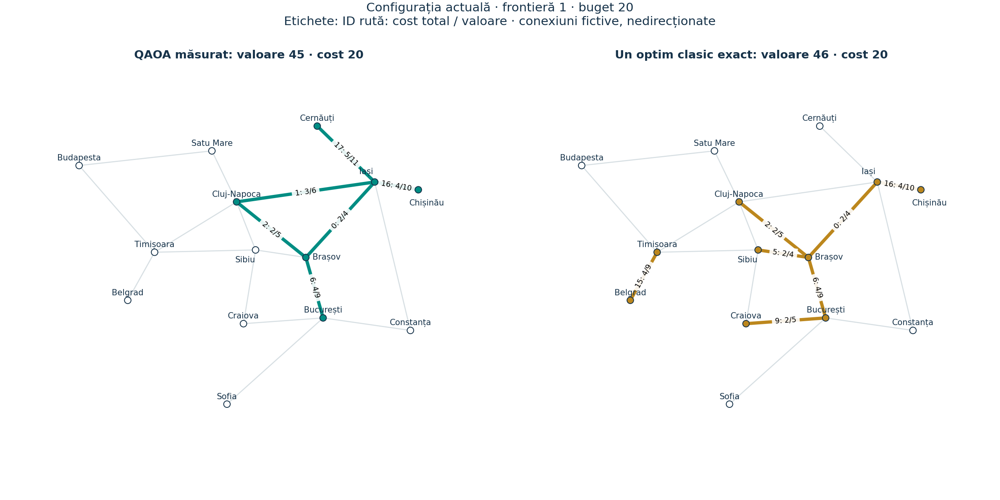
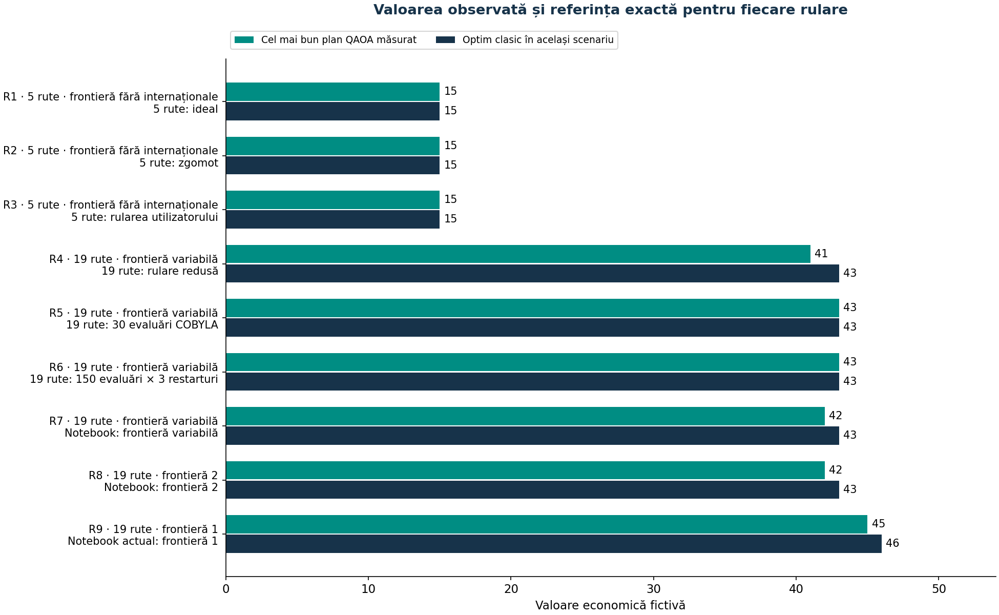
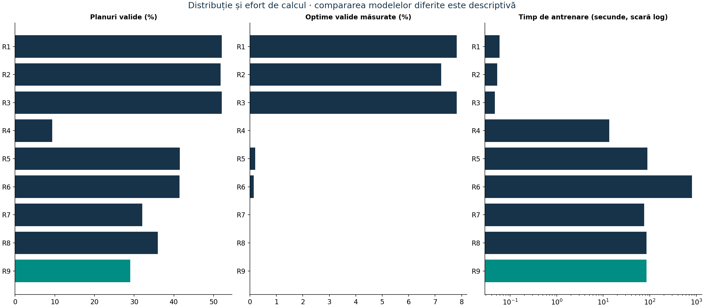
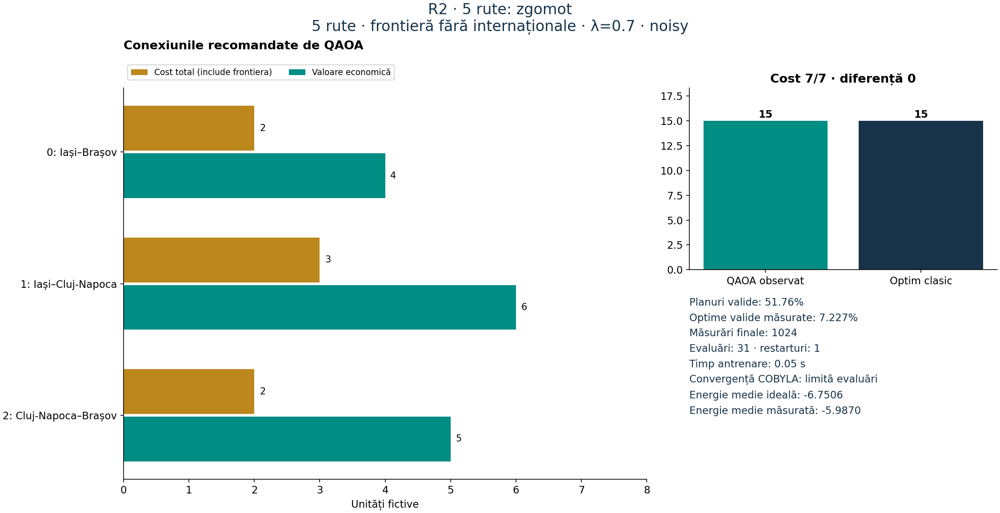
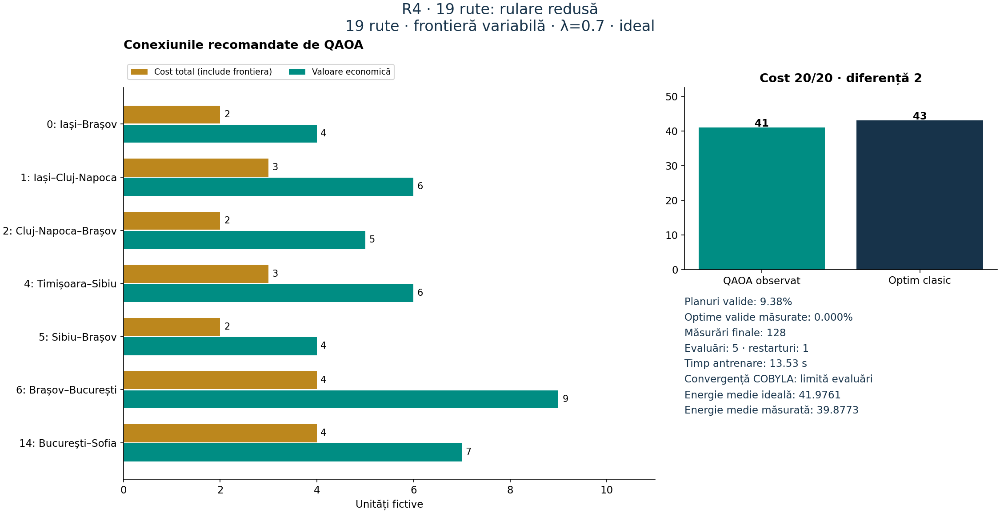
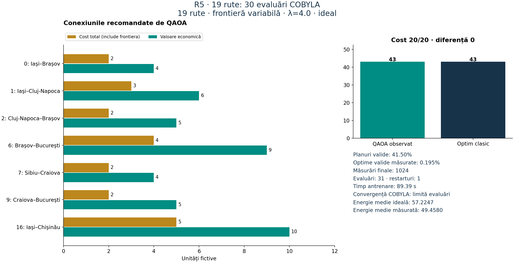
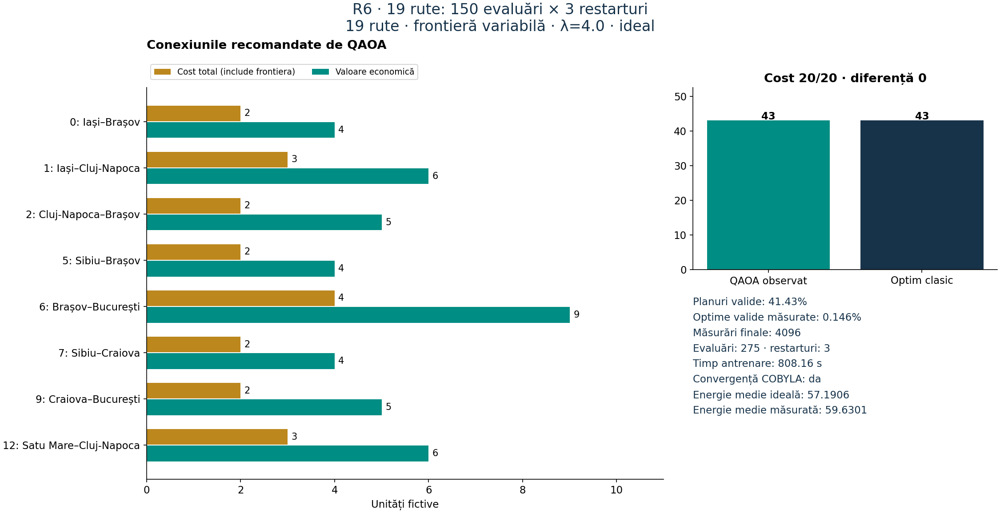
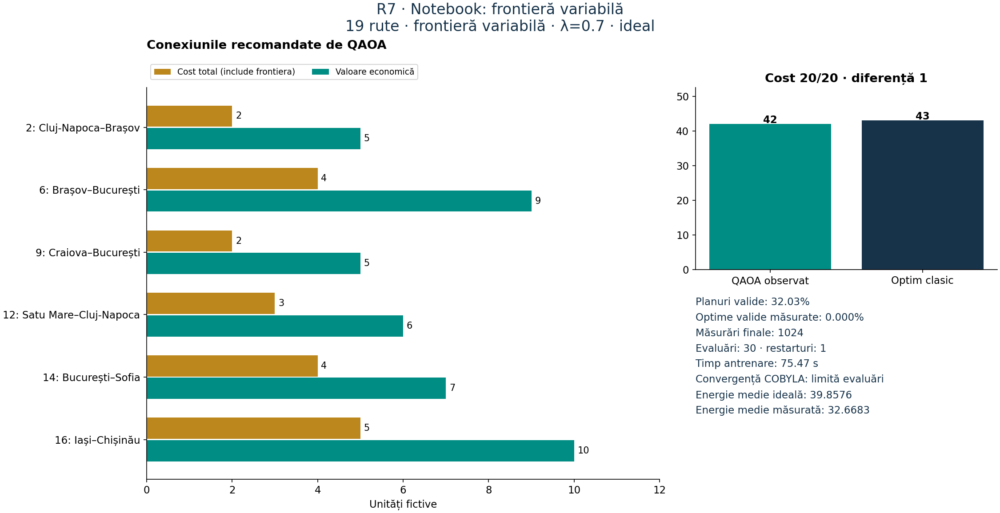
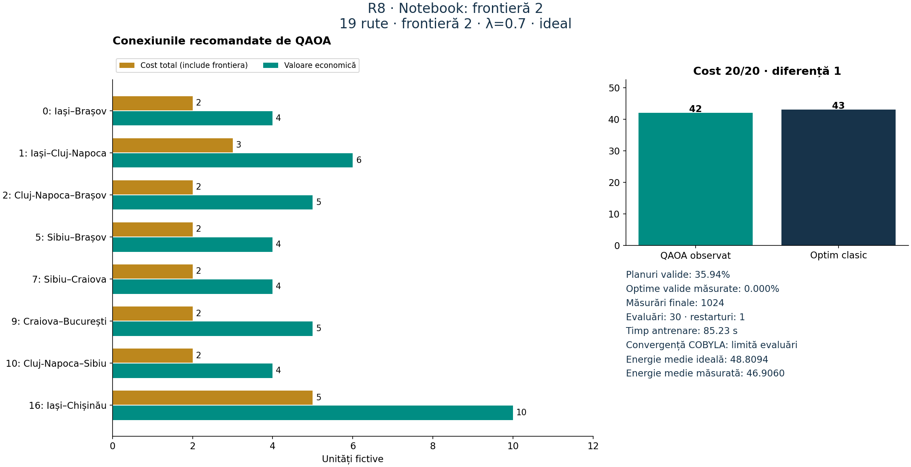
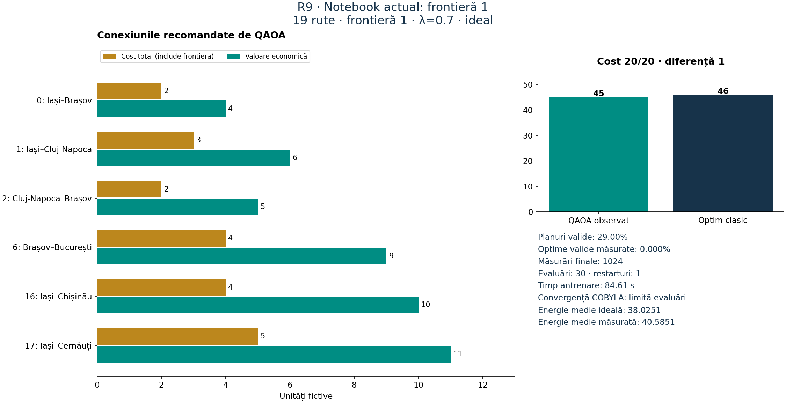

Configurația actuală: frontieră 1 · QAOA observat 45 / optim clasic 46 · cost 20/20
Analiză a rulărilor salvate, fără antrenări cuantice noi. Datele diferite sunt etichetate separat. Consultați raportul Markdown pentru proveniență și limite.
| Rulare | Rute | Frontieră | λ | Shots | Cost | Valoare QAOA | Optim clasic | Diferență | Valide % | Optime % | Evaluări | T antr. s | Convergență |
|---|---|---|---|---|---|---|---|---|---|---|---|---|---|
| R1 | 5 | fără internaționale | 0.7 | 1024 | 7 | 15 | 15 | 0 | 52.05 | 7.812 | 31 | 0.06 | Limită evaluări |
| R2 | 5 | fără internaționale | 0.7 | 1024 | 7 | 15 | 15 | 0 | 51.76 | 7.227 | 31 | 0.05 | Limită evaluări |
| R3 | 5 | fără internaționale | 0.7 | 1024 | 7 | 15 | 15 | 0 | 52.05 | 7.812 | 31 | 0.05 | Limită evaluări |
| R4 | 19 | variabilă | 0.7 | 128 | 20 | 41 | 43 | 2 | 9.38 | 0.000 | 5 | 13.53 | Limită evaluări |
| R5 | 19 | variabilă | 4.0 | 1024 | 20 | 43 | 43 | 0 | 41.50 | 0.195 | 31 | 89.39 | Limită evaluări |
| R6 | 19 | variabilă | 4.0 | 4096 | 20 | 43 | 43 | 0 | 41.43 | 0.146 | 275 | 808.16 | Da |
| R7 | 19 | variabilă | 0.7 | 1024 | 20 | 42 | 43 | 1 | 32.03 | 0.000 | 30 | 75.47 | Limită evaluări |
| R8 | 19 | 2 | 0.7 | 1024 | 20 | 42 | 43 | 1 | 35.94 | 0.000 | 30 | 85.23 | Limită evaluări |
| R9 | 19 | 1 | 0.7 | 1024 | 20 | 45 | 46 | 1 | 29.00 | 0.000 | 30 | 84.61 | Limită evaluări |
Timpii sunt de antrenare. R1/R3 au aceeași distribuție salvată. R7–R9 folosesc metrice notebook rotunjite.



Sursă: validation\demo_5_ideal.json · ID-uri selectate: [0, 1, 2]
Sursă: validation\demo_5_noisy.json · ID-uri selectate: [0, 1, 2]

Sursă: rezultat.json · ID-uri selectate: [0, 1, 2]
Sursă: validation\smoke_19_ideal.json · ID-uri selectate: [0, 1, 2, 4, 5, 6, 14]

Sursă: validation\benchmark_19_ideal.json · ID-uri selectate: [0, 1, 2, 6, 7, 9, 16]

Sursă: rezultat19_extins.json · ID-uri selectate: [0, 1, 2, 5, 6, 7, 9, 12]

Sursă: validation\notebook_before_uniform_border.ipynb · ID-uri selectate: [2, 6, 9, 12, 14, 16]

Sursă: validation\notebook_before_border_one.ipynb · ID-uri selectate: [0, 1, 2, 5, 7, 9, 10, 16]

Sursă: Quantum_Railways_Labb.ipynb · ID-uri selectate: [0, 1, 2, 6, 16, 17]
